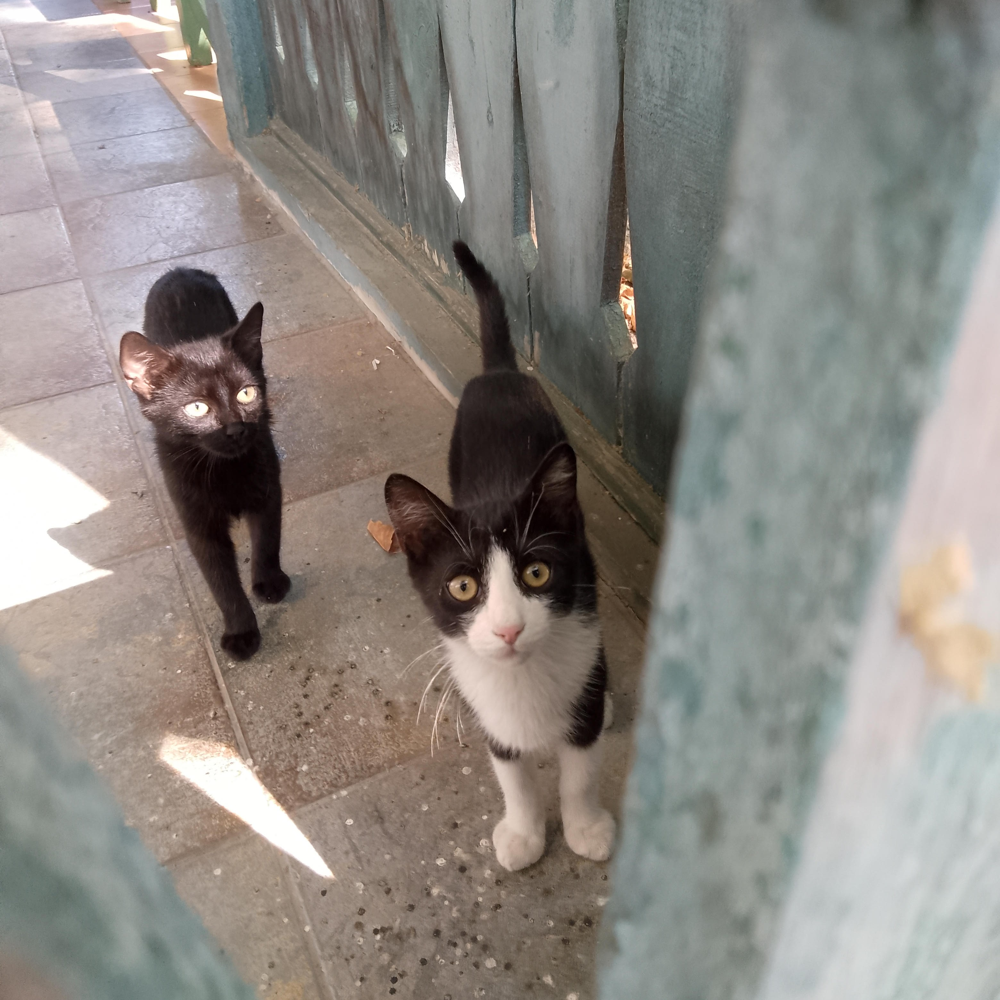

Mein Name ist Zsuzsa F.
Meine Berufung:
Pilgerschaft
Meine Hobbys:
- Lesen
- Quatschen
- Sport: Wandern, Bouldern, Pilates
- und natürlich mit Katzen spielen

Meine Ziele:
- Peaks of the Balkans - 10 Tägige Rundwanderung in den Bergen von Albanien-Montenegro-Kosovo.
- Diese Weiterbildung fertig machen
- Arbeit finden
Links zum Thema Peaks of the Balkans: